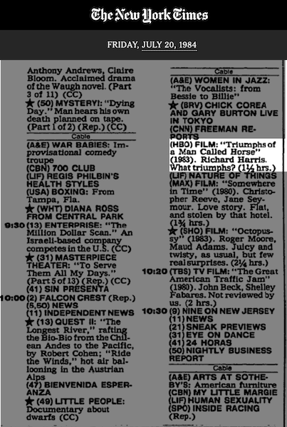

The fight between Gerry Cooney and Phillip Brown, originally scheduled for July 20, 1984, was postponed and eventually rescheduled to Sept 29 due to an injury by Cooney.
The Daily TV Schedule from the July 20 edition of The New York Times confirms that the fight was replaced with an airing of Triumphs of a Man Called Horse.
